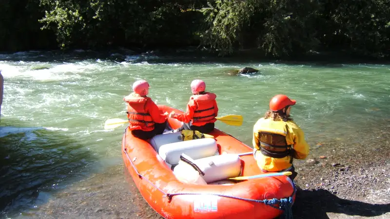

Harga rafting Kasembon bervariasi antar operator dan biasanya dihitung per orang, mencakup perlengkapan keselamatan, pemandu, serta beberapa fasilitas tambahan sesuai jenis paket yang dipilih.
- Harga rafting Kasembon umumnya dihitung per orang dengan minimal jumlah peserta tertentu dalam satu perahu.
- Paket standar biasanya sudah termasuk perlengkapan keselamatan, pemandu, dan dokumentasi dasar.
- Beberapa operator menawarkan paket tambahan seperti transportasi, makan siang, atau dokumentasi profesional.
- Musim liburan sekolah dan akhir tahun umumnya membuat permintaan dan harga cenderung lebih tinggi.
- Membandingkan beberapa operator sebelum booking membantu mendapatkan paket yang sesuai anggaran.
Berapa Kisaran Harga Rafting Kasembon?
Harga rafting Kasembon tidak memiliki angka tunggal karena setiap operator menetapkan tarif berbeda berdasarkan rute, fasilitas, dan jumlah peserta dalam satu grup.
Secara umum, harga arung jeram di Jawa Timur termasuk Kasembon dipengaruhi oleh jarak rute yang ditempuh, apakah rute penuh atau rute pendek, serta fasilitas pendukung yang disertakan dalam paket. Operator dengan fasilitas lebih lengkap, seperti area ganti pakaian, kolam bilas, dan restoran, umumnya mematok harga sedikit lebih tinggi dibandingkan operator dengan fasilitas dasar. Karena rentang harga ini dapat berubah mengikuti kebijakan masing-masing pengelola dan periode waktu tertentu, calon peserta disarankan mengecek langsung ke operator pilihan untuk mendapatkan informasi harga yang paling akurat dan terkini sebelum melakukan pemesanan.
Apa Saja Jenis Paket yang Ditawarkan Operator Rafting Kasembon?
Operator rafting Kasembon umumnya menawarkan beberapa jenis paket, mulai dari paket standar hingga paket khusus rombongan atau korporat dengan fasilitas tambahan.
Jenis paket yang biasa dijumpai antara lain:
- Paket standar perorangan, yang mencakup rute utama, perlengkapan keselamatan, pemandu, dan dokumentasi dasar berupa foto.
- Paket rombongan atau grup, yang biasanya menawarkan harga lebih kompetitif per orang untuk jumlah peserta dalam skala tertentu, cocok untuk keluarga besar atau komunitas.
- Paket korporat atau outbound, yang menggabungkan rafting dengan aktivitas team building tambahan di lokasi sekitar sungai.
- Paket gabungan dengan destinasi lain, seperti kombinasi rafting Kasembon dengan kunjungan ke kawasan wisata alam terdekat dalam satu itinerary.
- Paket dengan tambahan dokumentasi profesional, seperti foto atau video berkualitas tinggi yang diambil langsung oleh tim operator selama kegiatan berlangsung.
Apa Faktor yang Membuat Harga Rafting Kasembon Bervariasi Antar Operator?
Perbedaan harga rafting Kasembon antar operator umumnya dipengaruhi oleh kelengkapan fasilitas, kualitas perlengkapan keselamatan, dan pengalaman pemandu yang disediakan.
Beberapa faktor spesifik yang memengaruhi variasi harga meliputi:
- Kondisi dan usia perlengkapan keselamatan seperti perahu, pelampung, dan helm, karena operator yang rutin memperbarui perlengkapan biasanya membutuhkan biaya operasional lebih tinggi.
- Rasio jumlah pemandu terhadap peserta, di mana operator dengan standar keselamatan lebih ketat cenderung menyediakan lebih banyak pemandu per perahu.
- Lokasi titik awal dan titik akhir rute, karena jarak tempuh yang berbeda memengaruhi durasi dan tenaga operasional yang dibutuhkan.
- Fasilitas pendukung di basecamp, seperti ketersediaan kamar bilas, mushola, dan area parkir yang memadai.
- Reputasi dan pengalaman operator dalam mengelola kegiatan arung jeram di Sungai Konto selama bertahun-tahun.
Bagaimana Cara Memilih Paket Rafting Kasembon Sesuai Anggaran?
Cara memilih paket rafting Kasembon sesuai anggaran adalah dengan membandingkan fasilitas yang benar-benar dibutuhkan, jumlah peserta dalam grup, serta menghindari tergiur harga terlalu murah tanpa jaminan standar keselamatan jelas.
Beberapa langkah yang dapat dilakukan calon peserta antara lain menghubungi beberapa operator untuk membandingkan penawaran, menanyakan secara rinci apa saja yang termasuk dalam harga paket, serta memastikan operator memiliki standar keselamatan yang jelas seperti briefing wajib dan perlengkapan yang layak pakai. Memilih paket berdasarkan kebutuhan aktual, misalnya apakah memerlukan transportasi atau dokumentasi tambahan, juga membantu menghindari biaya yang sebenarnya tidak diperlukan.
FAQ
Apakah harga rafting Kasembon sudah termasuk perlengkapan?
Sebagian besar paket rafting Kasembon sudah mencakup perlengkapan keselamatan dasar seperti helm, pelampung, dan dayung, namun sebaiknya dikonfirmasi langsung ke operator terkait detail yang termasuk dalam harga.
Apakah ada diskon untuk rombongan besar dalam rafting Kasembon?
Beberapa operator rafting Kasembon menawarkan harga khusus untuk rombongan dengan jumlah peserta tertentu, sehingga menghubungi operator secara langsung dapat membantu mendapatkan penawaran terbaik.
Apakah harga rafting Kasembon berbeda saat musim liburan?
Harga rafting Kasembon dapat lebih tinggi pada periode liburan sekolah atau akhir tahun karena tingginya permintaan, sehingga memesan lebih awal disarankan untuk mendapatkan slot dan harga yang diinginkan.
Arya
Penulis artikel yang sudah berpengalaman di dalam dunia wisata outbound Batu Malang.